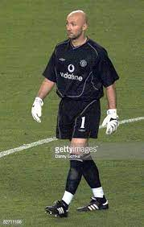

فابین بارتز
فابین بارتز در ۲۶ مه ۱۹۹۴ اولین بار برای فرانسه در پیروزی ۱ بر ۰ مقابل استرالیا بازی کرد. او در بازیهای جام ملتهای اروپا ۱۹۹۶ که فرانسه به مرحله نیمه نهایی راه یافت، شرکت نداشت. در بازی جام جهانی ۱۹۹۸ که فرانسه میزبان بود، بارتز در طی هفت بازی تنها دو گل از تیم مقابل خورد. قبل از شروع هر بازی لوران بلان «سر تیغ زده شده» بارتز را میبوسید؛ زیرا معتقد بود این کار برای تیم خوش شانسی میآورد. بارتز در جام جهانی ۱۹۹۸ نقشی اساسی در برنده شدن تیم فرانسه داشت. در جام جهانی ۱۹۹۸، فرانسه ۳ به ۰ تیم برزیل را در بازی فینال شکست داد. در این مسابقه بارتز تیم فرانسه را در مقابل حملات بازیکن فوتبال معروف برزیلی رونالدو حفظ کرد. بارتز یکی از بهترین دروازه بانان تاریخ فرانسه و جهان بهشمار میرود.